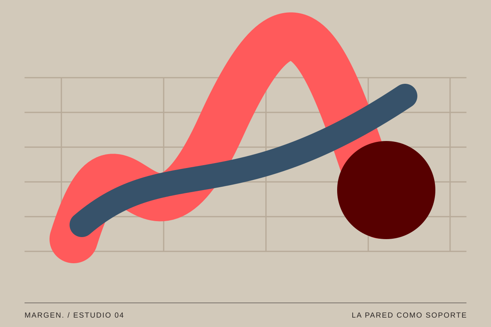
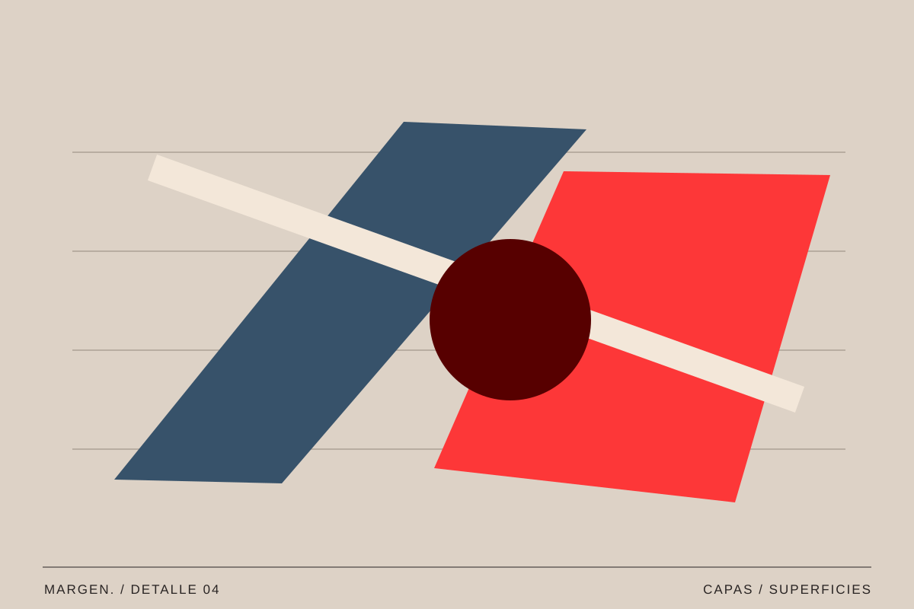

04 / Arte / Vol. 001
El arte ocupa la calle
Intervenciones visuales que transforman los espacios cotidianos.
MARGEN. / Texto editorial ·

Una pared puede ser un límite, un fondo o un lugar donde detenerse. Cuando aparece una imagen en ella, también cambia nuestra manera de recorrer ese espacio.
Encontrarlo sin buscarlo
En la calle, una obra comparte lugar con coches, comercios, ventanas y personas que van a otro sitio. No siempre llegamos con la intención de verla. Esa posibilidad de encontrarla por sorpresa forma parte de su relación con el público.
La escala y la distancia importan. Una forma visible desde la acera de enfrente se convierte en un detalle distinto cuando nos acercamos. La textura del muro, una esquina o una tubería pueden entrar en la composición. El soporte no desaparece detrás de la imagen.
La experiencia cambia según el momento. Un mural visto a primera hora de la mañana recibe una luz distinta al que encontramos al atardecer. Durante el día puede quedar rodeado de actividad; al anochecer, quizá se transforme en un plano de color casi silencioso. Frente a una obra dentro de una sala, aquí el entorno no está controlado. La ciudad entra en la imagen constantemente y modifica la forma en que nos relacionamos con ella.

La ciudad también puede ser un lugar para mirar.
Una imagen dentro de un lugar
El entorno aporta significados que una fotografía aislada no puede recoger del todo. El color de los edificios, los usos de una plaza y los recorridos de quienes la habitan forman parte de lo que vemos. Por eso merece la pena mirar alrededor antes de quedarnos únicamente con la obra.
También conviene distinguir una intervención acordada con el vecindario de una acción realizada sin ese diálogo. Hablar de arte urbano exige pensar en quién utiliza el espacio, quién decide sobre él y cómo se comparte.
Esa relación con el lugar también invita a pensar en la permanencia. Algunas intervenciones se realizan para durar; otras conviven con la posibilidad de desaparecer bajo una nueva capa de pintura. La fotografía puede conservar una versión, pero no sustituye por completo la experiencia de caminar junto al muro y entender su escala. En ese sentido, documentar una pieza implica mirar también sus bordes, sus alrededores y los cambios que aparecen con el tiempo.

Mirar durante el paseo
Podemos empezar observando una ruta que conocemos. ¿Qué paredes recordamos? ¿Qué colores aparecen? ¿Hay imágenes que nos ayudan a orientarnos? Hacer estas preguntas transforma un trayecto automático en una pequeña exploración.
La imagen que acompaña este artículo es una invitación a observar esa relación entre pintura y arquitectura. El texto propone una lectura general del espacio público; no pretende documentar la historia concreta de ese mural.
Podemos plantear un ejercicio de observación sin convertirlo en una búsqueda de obras famosas. Basta con recorrer una calle y registrar qué superficies llaman la atención: persianas pintadas, pegatinas, marcas tipográficas, paredes reparadas o señales superpuestas. Después, al ordenar las fotografías, aparecen relaciones de color y textura. Lo que parecía una sucesión de elementos sin conexión empieza a mostrar un lenguaje visual propio.
Una mirada compartida
Hablar de imágenes en el espacio público también es hablar de convivencia. Una intervención dialoga con personas que no necesariamente la han elegido como parte de su recorrido. Preguntarnos a quién representa, quién participa en ella y cómo se integra en el lugar amplía la conversación más allá de lo puramente estético.
La calle es una galería que no se visita del mismo modo dos veces. Observarla con atención nos recuerda que el diseño y el arte no solo viven en espacios preparados para mirarlos.